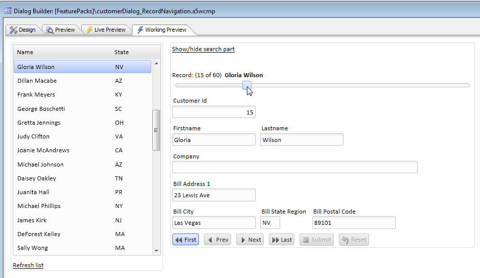
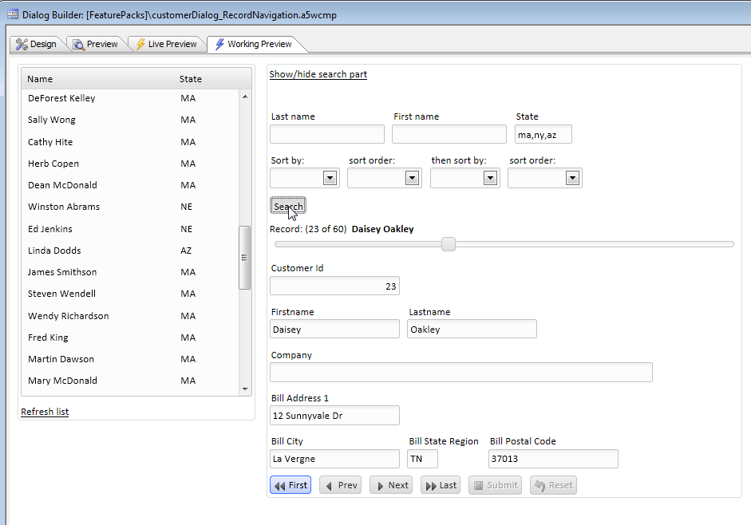
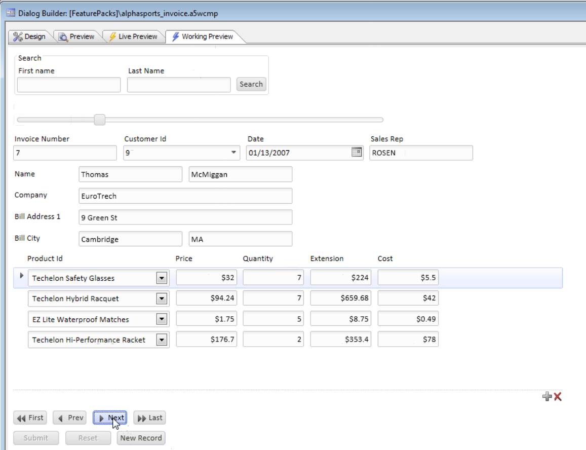
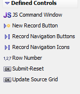
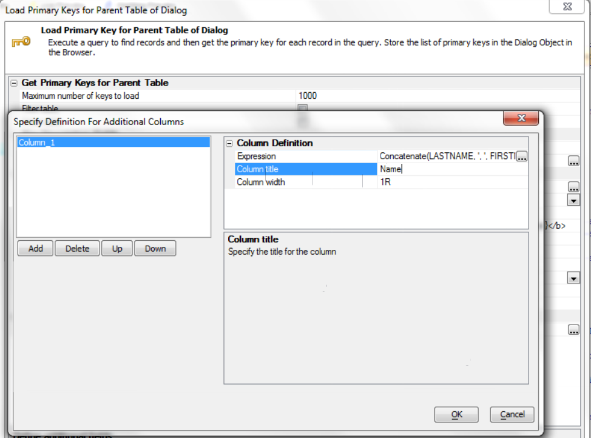

Record Navigation and Dialog Search
Requires the Dialog Component - Record Navigation and Dialog Search feature pack, included in subscriptionUsing this Feature Pack you can easily add functionality to let you navigate from record to record in a Dialog Component that has been bound to a database. The videos show how you can implement First/Next/Previous/Last buttons to move from record to record, how you can add a slider control to navigate from record to record, or how you can add a List View control to the Dialog to show you a list of key values that you can click on to navigate to a particular record in your Database.

You can also add a highly customized search part that allows you to enter search criteria so that when you navigate from record to record, you are only seeing records that meet your search criteria.

Watch Video: Simple Example
More complex example using a Dialog with Repeating Sections

Watch Video: With Repeating Sections
How The Record Navigation and Search Features in the above videos were implemented
In these videos we go into detail on how to implement the Dialog Navigation and Search Feature pack
Watch Video - Part 1: Add record navigation buttons and slider

Watch Video - Part 2: Add list view and better status message
Watch Video - Part 3: Add columns to the list view
Watch Video - Part 4: Refresh list, warn on navigate
Watch Video - Part 5: Search part
Watch Video - Part 6: Search part continued
Watch Video - Part 7: Sort part
Watch Video - Part 8: Event handling
Download Components Used in Videos